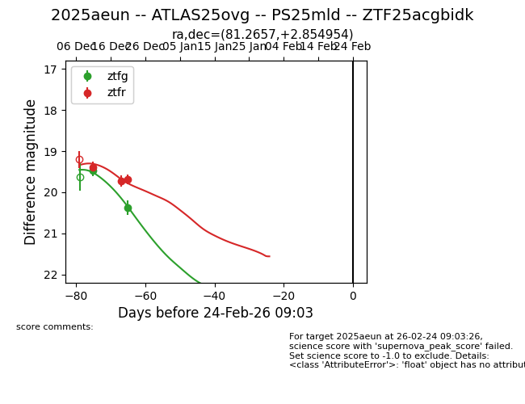
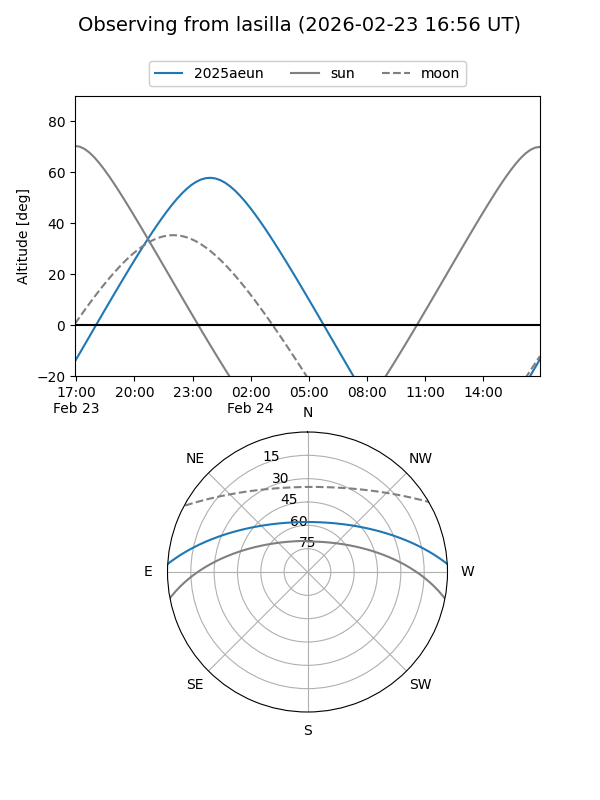
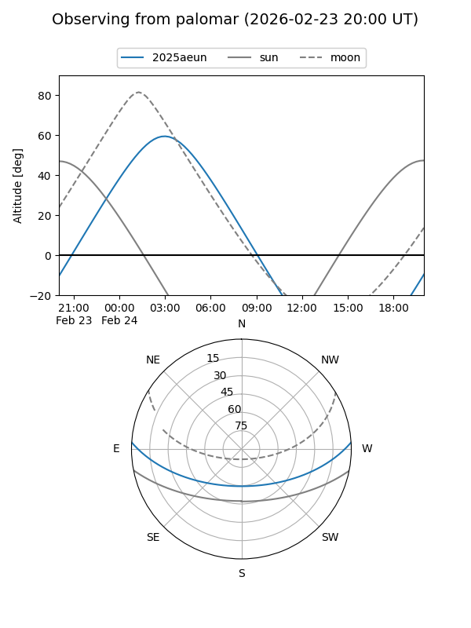
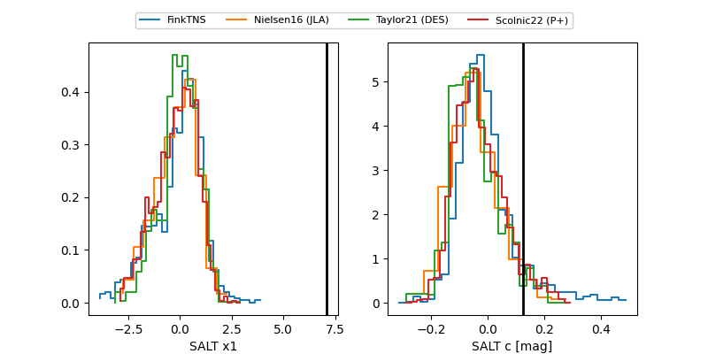

2025aeun
Target 2025aeun at 2025-12-31 18:00
Aliases and brokers:
FINK: link
Lasair: link
ALeRCE: link
TNS: link
YSE: link
alt names
ZTF25acgbidk (ztf,fink_ztf)
2025aeun (tns,yse)
ATLAS25ovg (atlas)
Coordinates:
equatorial (ra, dec) = 81.2657,+2.85495
equatorial (HMS+DMS) = 05:25:03.76,+02:51:17.83
galactic (l, b) = (200.0764,-17.72322)
Flags:
Photometry:
last ztfg=20.38, ztfr=19.68
2 ztfg, 3 ztfr detections
Lightcurve

Visibility


Additional plots
